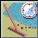

Quand une alarme provoque l'ouverture d'un panneau d'alarmes, il est possible de le masquer automatiquement pendant 2 minutes s'il vous gêne à ce moment-là, en raison d'une intervention plus importante en cours, par exemple.
Pour masquer les panneaux d'alarmes actifs :
1 cliquez sur le bouton

du panneau d'alarme à masquer.Pour masquer tous les panneaux d'alarmes :
1 cliquez sur le bouton de n'importe quel panneau d'alarmes.